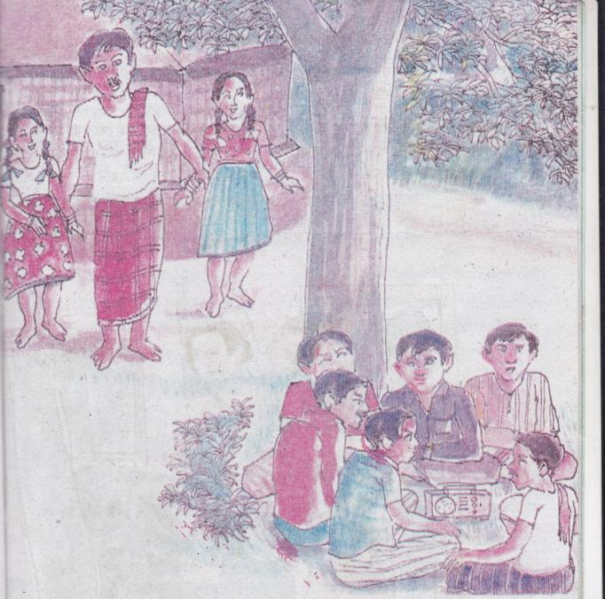
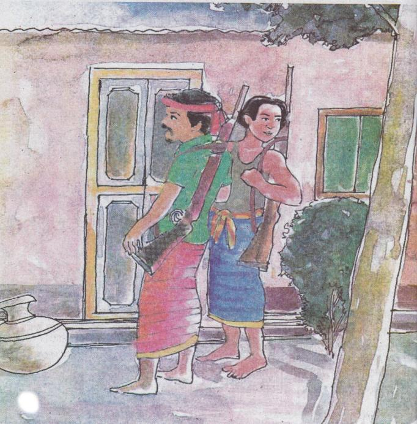
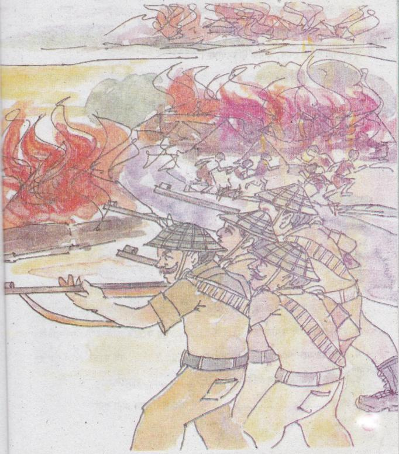

অপেক্ষা
সেলিনা হোসেন
রুমা আর রুবা দুই বোন। ওদের খুব ভাব। একসঙ্গে স্কুলে যায়। এক সঙ্গে খেলে। খুব কমই ঝগড়া হয় ওদের।
রুমার বয়স বারো আর রুবার দশ।
দুই জনের জন্মদিন নিয়ে ওদের মা-বাবার এক একটি গল্প আছে। ওদের মা রাহেলা বলে যেদিন রুমার জন্ম হয় সেদিন বাড়ির উঠানের শিউলি গাছটা ফুলে ফুলে ভরে ছিল। এত ফুল নাকি আর কখনো দেখেনি রাহেলা বানু। খুশবু ছড়িয়ে গিয়েছিল চারদিকে।
রুবা উদগ্রীব হয়ে বলে, মা আমার গল্পটা বল।
তোর গল্পটা আমি বলব, মা। এ কথা বলে জসীম মিয়া মেয়েকে জড়িয়ে ধরে। বলে, যেদিন তুই হলি সেদিন বাড়ির বাইরের আম গাছটার নিচে বসে আছি। হঠাৎ মাথার ওপরে তাকিয়ে দেখি আমের বোলে ভরে আছে গল্পটা। এত বোল আসতে দেখিনি আগে। বোলের গন্ধে চারদিক ভরে গেছে।
দুই বোন মা-বাবার আদরের ছায়ায় বড় হয়। স্কুলে যাওয়ার পথে বুনোফুল ছিঁড়ে বেণীর সঙ্গে গেঁথে রাখে। ফড়িং ধরে। আবার আকাশে উড়িয়ে দেয়। ফুলের পাপড়ি ছিঁড়ে খাতার ভেতর চাপা দিয়ে রাখে। শুকিয়ে গেলে বাবার কপালে লাগিয়ে দিয়ে বলে, বাবা তোমার হাজার বছর আয়ু হোক। মায়ের কপালে লাগিয়ে দিয়ে বলে, মা তোমার ভাতের হাঁড়ি ভরা থাকুক।
জসীম মিয়া ওদের কপালে চুমু দিয়ে বলে, আমার মেয়েগুলোর অনেক বুদ্ধি। অনেক বড় হ, মা। চাইলে লেখাপড়ার জন্য তোদের আমি ঢাকা পাঠাব।
দুই বোন খুশিতে হাততালি দেয়। বাবা-মা ওদের উৎফুল্ল মুখের দিকে তাকিয়ে থাকে। একদিন জসীম মিয়া বাজারে যায়। সেখান থেকে দুই সের চার-ডাল কিনে বাড়ি ফিরে বারান্দায় ধপাস করে বসে পড়ে। ছুটে আসে রাহেলা বানু।
- কী হয়েছে?
- যুদ্ধ।
- যুদ্ধ? রাহেলা বানু অবাক হয়ে বলে।
১২১কিছু বলার আগেই জসীম শুনতে পায় বাইরে হইচই। ও দুই মেয়ের হাত ধরে বাইরে আসে। দেখে লোকজন আম গাছের নিচে গোল হয়ে বসে রেডিওতে খবর শুনছে। বিবিসির খবরে বলছে, ঢাকা শহরে গত মধ্যরাতে গণহত্যা শুরু করেছে পাকিস্তানি সেনাবাহিনী।
জসীমের মনে পড়ে কিছুদিন আগে ওরা বঙ্গবন্ধুর ৭ই মার্চের ভাষণ শুনছিল- ‘এবারের সংগ্রাম আমাদের মুক্তির সংগ্রাম। এবারের সংগ্রাম স্বাধীনতার সংগ্রাম। ’

লোকজন খবর শুনে উত্তেজিত হয়ে বলে, আমাদের সবাইকে যুদ্ধ করতে হবে।
রুমা-রুবা বাবার হাত ছাড়িয়ে অন্য ছেলেমেয়েদের কাছে যুদ্ধের কথা বলার জন্য ছুট দেয়। চিৎকার করে বলে, যুদ্ধ করতে হবে রে। যুদ্ধ যুদ্ধ।
কয়েকমাস পরে গাঁয়ে মিলিটারি আসে। জসীম শহর থেকে আসা ছেলেদের কাছ থেকে রাইফেল চালানো শিখে নেয়। তারপর গড়ে তোলে মুক্তিবাহিনী। রাহেলা মেয়েদের নিয়ে বাড়িতে থাকবে। জসীম চেয়েছিল রাহেলা ওর বাবার বাড়ি চলে যাক, কিন্তু রাহেলা যেতে রাজি হয়নি।

নদীর ধারেই বাজার। সেদিন বিকেলে বাজারে গেলে পাকিস্তানি মিলিটারির সামনে পড়ে যায় জসীম। ওরা বাজারের দোকান ও ঘর-বাড়িতে আগুন লাগিয়ে দেয়। গুলি ছুঁড়তে আসে। একটি বুলেট এসে লাগে জসীমের বুকে। নদীর ধারে মুখ থুবড়ে পড়ে যায় ও। রক্তে ভেসে যায় মাটি। নিজেরই রক্তে মাখামাখি হয়ে যায় ওর শরীর।
মিলিটারি চলে গেলে যারা পালিয়ে গিয়েছিল তারা ঘরে ফিরে আসে। রাহেলাও মেয়েদের নিয়ে আসে বাড়িতে। অনেক বাড়ি পুড়ে গেলেও ওদের বাড়িতে আগুন লাগেনি। বড় আম গাছটা ঘরের চাল আড়াল করে রেখেছে বলে আগুন এখানে আসতে পারেনি।
রাহেলা সারা রাত জসীমের জন্য অপেক্ষা করে। কিন্তু জসীম বাড়ি ফিরে না। রুমা-রুবা কাঁদতে কাঁদতে ঘুমিয়ে যায়।
পরদিন গাঁয়ের লোকেরা জসীমের লাশ নিয়ে আসে বাড়িতে। রুমা-রুবা কিছুক্ষণ বাবাকে দেখে নিশ্চুপ হয়ে যায়। যেন ওরা কথা বলা ভুলে গেছে। রাহেলা তো বারবার জ্ঞান হারাচ্ছে। গাঁয়ের মেয়েরা ওদের মাকে দেখাশোনা করছে। দুই বোন রান্নাঘরের দরজায় চুপ করে বসে থাকে।
রুবা রুমার হাত ধরে ঝাঁকিয়ে বলে, যুদ্ধ মানে কী বুবু?
রুমা দুই হাতে চোখ মুছে বলে, বাবার মরে যাওয়া।
দুই জন আকাশের দিকে তাকায়। অনেক দূরে কালো ধোঁয়ার মতো কিছু একটা আকাশের দিকে উঠছে। উঠছে তো উঠছেই।
ওরা বুঝতে পারে পাশের গ্রামে আগুন দিয়েছে পাকিস্তানি মিলিটারি।
দুই বোন আকাশের দিকে হাঁ করে তাকিয়ে থাকে। দুই জনেই বুঝতে পারে যুদ্ধ মানে কী?
ঘোর বর্ষা। বৃষ্টির তোড়ে ডুবে যায় মাঠঘাট। রাহেলা বানু শুকনো মুখে বারান্দায় বসে থাকে। দুই বোন ধানখেতের আলের পাশ দিয়ে গড়িয়ে যাওয়া পানি থেকে কুঁচো চিংড়ি ধরে আনে। ওদের মা অন্যের বাড়ি থেকে আনা চালে ভাত রান্না করে।
দু-মুঠো চাল মাটির কলসিতে জমিয়ে রাখে রাহেলা বানু। রাতে কোনো মুক্তিযোদ্ধা এলে তার জন্য ভাত রান্না করবে। দুই বোন শুকনো লাকড়ি কুড়িয়ে এনে রান্নাঘরে জমিয়ে রাখে। যদি লাকড়ির দরকার হয় তখন কী দিয়ে ভাত রান্না করবে মা? দুই বোন অধীর অপেক্ষায় থাকে।
সে রাতে বৃষ্টি ছিল না। জ্যোৎস্নায় ভরা ছিল উঠোন।
১২৪গভীর রাতে দুইজন মুক্তিযোদ্ধা আসে ওদের বাড়িতে।
চুপিচুপি ডাকে, মা দরজা খোল মাগো-
রুবা ধড়মড়িয়ে ওঠে রুমাকে ডাকে? ও ঠেলে মাকে জাগায়।
- মা ওঠো। শোন, কেউ এসেছে। রাহেলা বানু দরজায় টুকটাক শব্দ শোনে। দরজার কাছে গেলে আবার শুনতে পায় সে ডাক, মা দরজা খোল।
রাহেলা কাঁপা হাতে দরজা খুললে দুইজন মুক্তিযোদ্ধ দ্রুত ঘরে ঢুকে দরজা বন্ধ করে দেয়।
ওদের একজন বলে, ট্রেনিংয়ের সময় জসীম কাকু আমাদের বলেছিলেন দরকার হলে যেন আপনার কাছে আসি।
- মা, আপনি আমাদের চিনবেন না। আমাদের খিদে পেয়েছে। ভাত খেয়েই চলে যাব।
- কোথায় যাবে? রুমা জিজ্ঞেস করে।
- নদীর ওপারে। ওখানে মুক্তিযোদ্ধাদের ক্যাম্প আছে।
- তোমরা যুদ্ধ করবে? রুবা জানতে চায়।
- হ্যাঁ, আমরা পাকিস্তানি মিলিটারির ক্যাম্প আক্রমণ করব।
- তোমাদের রাইফেলগুলো ছুঁয়ে দেখি? রুমা গভীর আবেগে বলে।
- হ্যাঁ দেখ।
দুজনে দুবোনের কোলে রাইফেল দুটো দিয়ে দেয়। রাইফেল দুটো ওরা কোলে নিয়ে বসে থাকে। মা রান্না চড়ায়। কিছুক্ষণ পর রাহেলা গরম ভাত নিয়ে আসে গামলা ভরে। সঙ্গে ডিম-আলুর তরকারি। যোদ্ধা দুইজন গপগপিয়ে খায়। দেরি করার সময় নেই। নদীর ঘাটে ওদের জন্য নৌকা নিয়ে বসে আছে অন্যরা। দেরি করা চলবে না। খাওয়া শেষ হলে রাহেলা বলে তোমরা আবার আসবে তো?
দরকার হলে আসতে পারি। নইলে অন্যেরা আসবে। কেউ না কেউ আসবে।
রাহেলা বানুকে সালাম করে দুই বোনের মাথায় হাত বুলিয়ে চলে যায় মুক্তিযোদ্ধারা।
১২৫বর্ষা শেষ।
আশ্বিনের শিউলি ফোটার দিন শুরু হয়েছে। একদিন দরজায় টুকটুক শব্দ হয়।
- খুকুমণিরা দরজা খোল।

দুই বোন লাফ দিয়ে উঠে দরজা খোলে। মুক্তিযোদ্ধারা আসে। ভাত খায়। নয়তো একটু ঘুমিয়ে নেয়। রাতের অন্ধকারে আবার চলে যায়।
ঘোরতর যুদ্ধ চলছে চারদিকে।
রুমা আর রুবা রাতে ঠিকমতো ঘুমাতে পারে না।
ওরা আবার অপেক্ষা করে একটি ডাক শোনার জন্য,
- খুকুমণিরা দরজা খোল, আমরা মুক্তিযোদ্ধা।
অনুশীলনী
১. শব্দগুলো পাঠ থেকে খুঁজে বের করি। অর্থ বলি।
|
খুশবু |
উদ্গ্রীব |
বিবিসি |
গণহত্যা |
|
বঙ্গবন্ধু |
ট্রেনিং |
গপগপিয়ে |
মুক্তিবাহিনী |
|
মুক্তিযোদ্ধা |
ক্যাম্প |
মিলিটারি | |
২. ঘরের ভিতেরের শব্দগুলো খালি জায়গায় বসিয়ে বাক্য তৈরি করি।
|
বঙ্গবন্ধুর |
মিলিটারির |
গণহত্যা |
উদ্গ্রীব |
|
বিবিসির |
মুক্তিযোদ্ধারা | ||
ক. রুবা […………………………………] হয়ে বলে, মা আমার গল্পটা বল।
খ. সবাই আমগাছের নিচে বসে রেডিওতে [………………………………] খবর শুনছে।
গ. ঢাকা শহরে গত মধ্যরাতে […………………] শুরু করেছে পাকিস্তানি সেনাবাহিনী।
ঘ. জসীমের মনে পড়ে কিছুদিন আগে ওরা [………………] ৭ই মার্চের ভাষণ শুনছিল।
ঙ. বিকেলে বাজারে গেলে পাকিস্তানি [………………………..] সামনে পড়ে যায় জসীম।
চ. রাতে […………………………………….] এলে তার জন্য ভাত রান্না করবে।
১২৭৩. প্রশ্নগুলোর উত্তর মুখে মুখে বলি ও লিখি।
ক. রুমার জন্মদিনের গল্পটি কী?
খ. রুবার জন্মদিনের গল্পটি কী?
গ. রাহেলাবানু প্রতিদিন দুই মুঠো চাল উঠিয়ে রেখে দিত কেন?
ঘ. গভীর রাত পর্যন্ত দুই বোন কেন জেগে থাকত?
ঙ. মুক্তিযোদ্ধাদের সাথে জসীম মিয়ার পরিবারের সম্পর্কটি ব্যাখ্যা কর।
চ. “আমার মেয়েগুলোর অনেক বুদ্ধি। অনেক বড় হ মা। ” – “অনেক বুদ্ধি” এবং “বড় হ” বলতে কী বোঝ?
ছ. একজন মুক্তিযোদ্ধার যুদ্ধ করার জন্য কী কী যোগ্যতা ও দক্ষতা থাকা দরকার?
৪. ঠিক উত্তরটিতে () চিহ্ন দিই।
ক. ফুলের পাপড়ি ছিঁড়ে দুই বোন কোথায় রাখতো?
১. বইয়ের মধ্যে
২. বালিশের নিচে
৩. কৌটার মধ্যে
৪. খাতার মধ্যে
খ. আমগাছের নিচে বসে জসীম কিসের খবর শুনছিল?
১. বাজারের খবর
২. যুদ্ধের খবর
৩. গণহত্যার খবর
৪. বাড়ির খবর
গ. রুবা রুমার হাত ধরে ঝাঁকিয়ে বলে, যুদ্ধ মানে কী বুবু? রুমা দুই হাতে চোখ মুছে বলে-
১. বাবার মরে যাওয়া
২. মায়ের মরে যাওয়া
৩. ভাই বোনের মরে যাওয়া
৪. স্বামী মরে যাওয়া
ঘ. কখন শিউলি ফুল ফোটে?
১. আশ্বিন মাসে
২. কার্তিক মাসে
৩. দিনের বেলা
৪. মাঘ মাসে
১২৮৫. শব্দগুলোকে বিশেষ্য ও বিশেষণ পদ অনুযায়ী সাজাই
এমন কিছু শব্দ আছে যা দিয়ে কারোর নাম, জায়গার নাম বোঝায় সেগুলো বিশেষ্য। যেমন- নদী শুকিয়ে গেছে। এখানে ‘নদী’ বিশেষ্য পদ। আবার এমন শব্দ আছে যা দিয়ে বিশেষ্য শব্দের দোষ, গুণ, অবস্থা, পরিমাণ, সংখ্যা বোঝায় সেগুলো বিশেষণ পদ। যেমন- মুনা দৌড়ে দ্রুত পালিয়ে গেল। এখানে ‘দ্রুত’ বিশেষণ পদ। এবার নিচের শব্দগুলো থেকে বিশেষ্য ও বিশেষণ পদ আলাদা করি।
গাছ, ভাত, শুকনো, ভীষণ, নদী, কাঁপা, দরজা, রাইফেল, গরম, গভীর, হাঁড়ি, দ্রুত।
|
বিশেষ্য |
বিশেষণ |
|
নদী |
গরম |
|
[.........................] |
[.........................] |
|
[.........................] |
[.........................] |
|
[.........................] |
[.........................] |
|
[.........................] |
[.........................] |
|
[.........................] |
[.........................] |
|
[.........................] |
[.........................] |
৬. বিপরীত শব্দ লিখি এবং তা দিয়ে একটি করে বাক্য লিখি।
|
জন্ম |
মৃত্যু |
যুদ্ধের সময় দেশের অনেক লোকের মৃত্যু হয়েছিল। |
|
কান্না |
[.........................] |
[.........................] |
|
ভরা |
[.........................] |
[.........................] |
|
যুদ্ধ |
[.........................] |
[.........................] |
|
দূর |
[.........................] |
[.........................] |
|
শুকনো |
[.........................] |
[.........................] |
৭. বাক্য রচনা করি।
|
জন্মদিন |
আয়ু |
অপেক্ষা |
মুক্তিযোদ্ধা |
রেডিও |
৮. কথাগুলো বুঝে নিই।
|
ধপাস করে পড়া |
হঠাৎ ধপ করে পড়া। ট্রাক থেকে চালের বস্তাটি ধপাস করে পড়ে গেল। |
|
মুখ থুবড়ে পড়া |
উপুড় হয়ে বা হুমড়ি খেয়ে পড়া। ছেলেটা হোঁচট খেয়ে মুখ থুবড়ে পড়ে গেল। |
|
গপগপিয়ে খাওয়া |
একসঙ্গে বেশি খাবার মুখে পুরে দ্রুত খাওয়া। সে গপগপিয়ে সব ভাত খেয়ে ফেলল। |
|
দুই সের | আমাদের দেশে আগে ওজন মাপের জন্য ‘সের’ ব্যবহার করা হতো। ১ সের পরিমাণ বর্তমান মাপে ১ কেজির কিছু কম (প্রায় ০.৯৩৫ কেজি)। ১ কেজি = ১.০৭ সের (প্রায়) |
৯. কর্ম-অনুশীলন।
আমার শ্রেণিশিক্ষক, মা-বাবা, দাদা-দাদি, পাড়া-প্রতিবেশীদের নিকট থেকে মহান মুক্তিযুদ্ধের সময়কার গল্প শুনে তা লিখি ও শ্রেণির সহপাঠীদের পড়ে শোনাই।
লেখক-পরিচিতি
সেলিনা হোসেন বাংলাদেশের বিশিষ্ট ঔপন্যাসিক ও ছোটগল্পকার। তিনি ১৪ই জুন ১৯৪৭ খ্রিষ্টাব্দে রাজশাহীতে জন্মগ্রহণ করেন। তিনি বাংলা একাডেমিতে পরিচালক পদে থাকা অবস্থায় অবসর গ্রহণ করেন। ‘সাগর’, ‘গল্পে বর্ণমালা’, ‘কাকতাড়ুয়া’, ‘চাঁদের বুড়ির পান্তা ইলিশ’ ইত্যাদি তাঁর লেখা শিশু-কিশোর উপযোগী বই। তিনি সাহিত্যকর্মে অবদানের জন্য বাংলা একাডেমি পুরস্কার পান। ২০০৯ সালে ‘একুশে পদক’ লাভ করেন। ২০১০ সালে রবীন্দ্রভারতী বিশ্ববিদ্যালয়, কলকাতা থেকে তিনি ডিলিট উপাধি পান। ২০১১ সালে দিল্লির সাহিত্য একাডেমি থেকে প্রেমচাঁদ ফেলোশিপ পান।
১৩০